What is Edda?
In Submission Open Source
Edda is a correct-by-construction approach for designing high utilization real-time networks (RTN). Edda designs and plans out an RTN using (a) a new mathematical model that can estimate temporal constraints in a more precise, tighter manner, (b) a novel "real-time aware" path assignment scheme that considers end-to-end requirements (for both, scheduling and routing) and (c) a flexible runtime path assignment schemes --- all of which results in better performance (more flows with strict timing constraints being allowed in the network) as well as better static guarantees. In fact, we demonstrate that Edda can accommodate 20% more flows than the state-of-the-art system while discovering 10% more paths than competing systems.
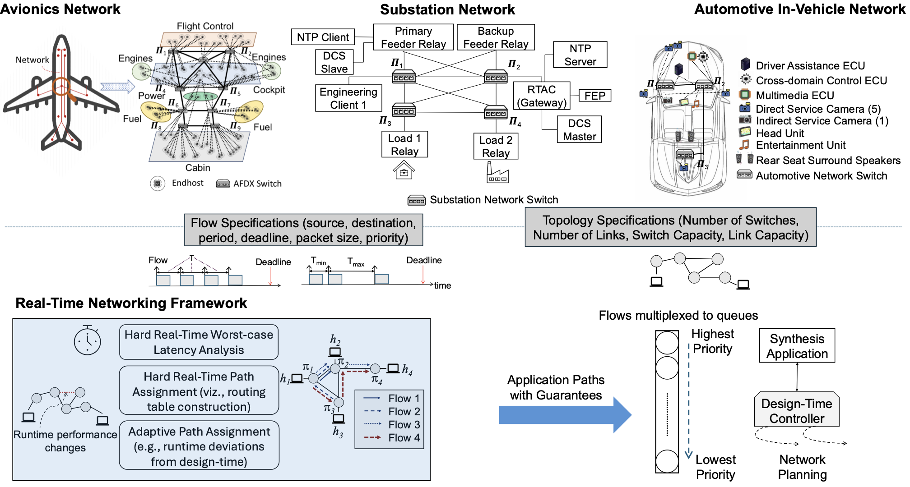
This website serves as a supplement to the paper. Please visit our GitHub repository for source code, datasets, and pre-trained models.
Background
Real-Time Networks (RTNs) require three properties to be satisfied: (i) stringent hard real-time guarantees, (ii) high utilization requirements, and (iii) predictability to ensure safety, correctness and certification. Designing and implementing RTNs while ensuring these properties are satisfied is the core challenge Edda tackles. Edda addresses this by: (i) a new mathematical model that tightly analyzes, and accounts for worst-case latencies for network flows considering their end-to-end real-time requirements, (ii) flexible, adaptive path assignment and routing algorithms for flows with varying timing requirements. Previous approaches to perform an end-to-end analysis have resulted in conservative estimates that over-provision and give bloated worst-case timing estimates.
Problem Statement
Formally, given input an RTN G(V,E) and applications F, comprising n network flows, we aim to allocate paths for each of the flows Fi ε F that satisfies hard real-time requirements while doing so in an efficient manner without over-provisioning. The path assignment also needs to be flexible considering both design-time, worst-case and expected, average delays for every flow.
Methodology
We solve this problem in 2 stages:
Stage 1 — Delay Model
The delay model of Edda was based on delay composition algebra adapted and extended to the RTN model.
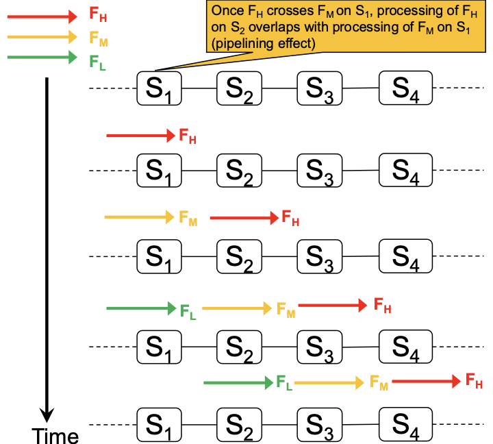
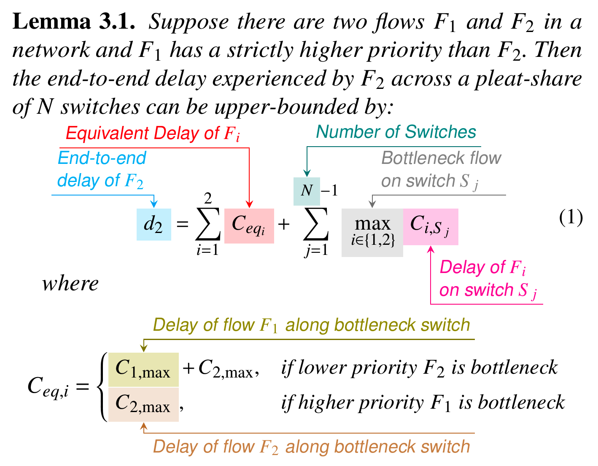
Stage 2 — Path Assignment Model
The path assigment scheme was based on flexble, adaptive routing ensuring that flows meet their deadlines in the worst-case while ensuring their average delays are minimized.
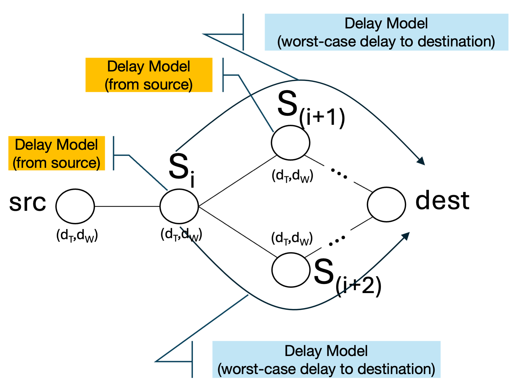
Stage 3 — Evaluation on realistic case studies
Case studies from RTNs in the space of avionics, substation, automotive and medical device networks.
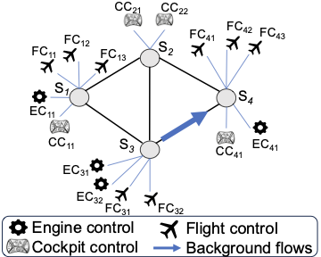
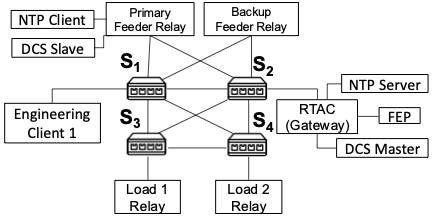
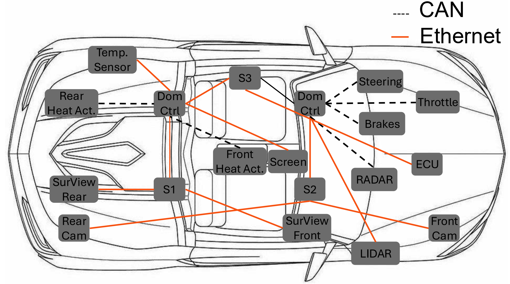
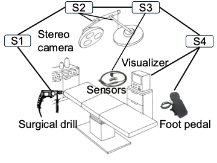
Results
We studied the scalability of Edda with deadlines, with path lengths and also with number of flows. We compared it with SOTA in RTNs, RealFlow. For full results see the paper.
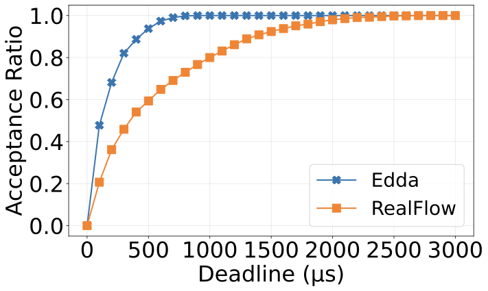
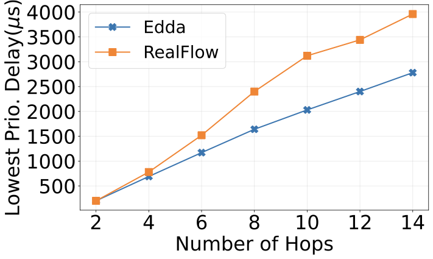
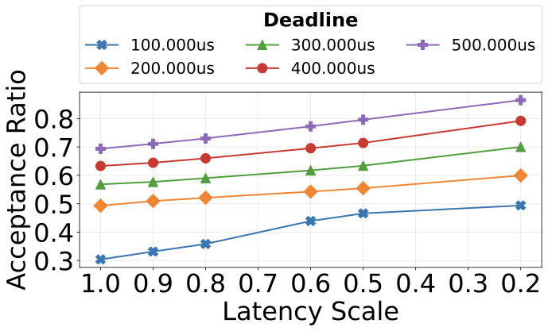
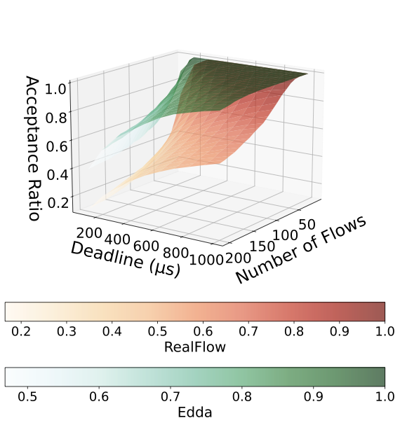
Realistic Case Studies
Results from Avionics:
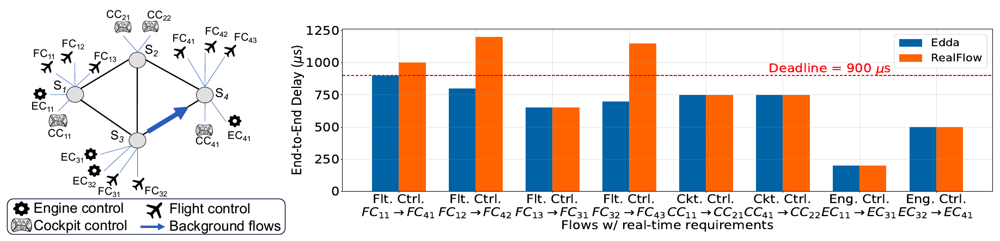
Results from Substation:
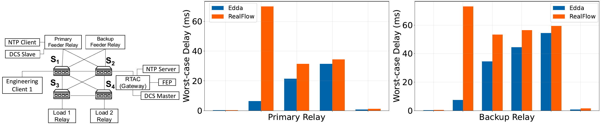
Results from Automotive:
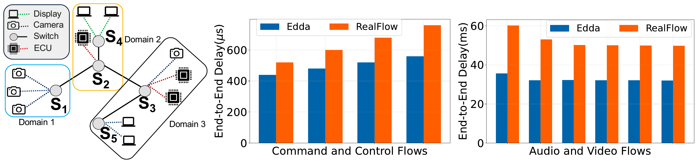
Results from Medical:
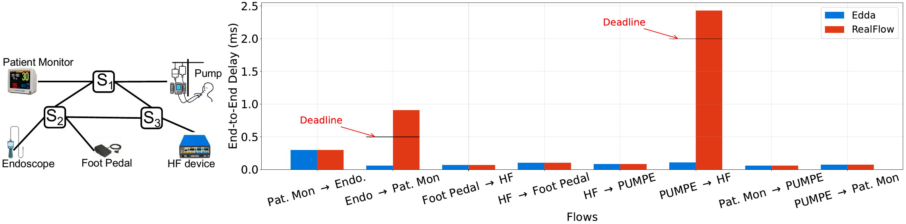
FAQ
Edda is available at:
https://anonymous.4open.science/r/edda-F8E6/src/Implementation Details
Edda is implemented as a custom network simulator. We built it as a custom network simulator over using a standard simulator because -- (i) a custom simulator allows us more control over studying the effects of our analytical scheduling and routing model, (ii) our framework is specialized for Real-Time Networks (RTNs), and simulators, with their event scheduling infrastructure and general-purpose design have significant overhead that is not appropriate for our fine-grained measurements.